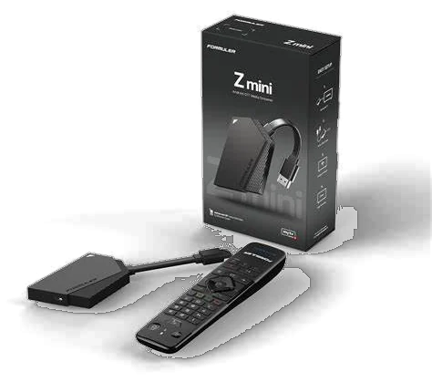
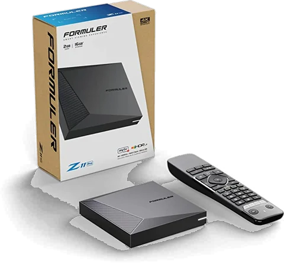

Gardez vos émissions. Allégez la facture.
Tv-Centre du Québec vous aide à remplacer le câble par une solution légale : le bon appareil, configuré à distance, et les services officiels qui correspondent à ce que vous regardez.
Chaque ligne de votre facture mérite une question.
Le bilan télé passe en revue ce que vous payez et ce que vous regardez vraiment. Les lignes inutiles disparaissent, ce que vous aimez reste.
3 questions · environ une minute · aucun compte à créer
Montants fictifs pour illustrer le calcul. Le bilan télé utilise vos propres montants.
Cinq appareils 4K, de 180 à 350 $.
Des boîtiers ONN et Formuler qui se branchent sur le port HDMI de votre téléviseur. Vous choisissez, nous configurons.
Vous choisissez. On configure. Vous regardez.
- 1
Vous choisissez
Un appareil de la boutique, ou celui que le bilan télé vous recommande. Paiement par virement Interac ou par carte de crédit.
- 2
On configure à distance
Écrivez-nous : l’appareil est configuré à distance avec les applications officielles qui vous conviennent. délai et conditions à compléter
- 3
Vous regardez
Branchez l’appareil sur le port HDMI, reliez-le au Wi-Fi ou par câble Ethernet selon le modèle, et c’est prêt.

Photo du site actuelCe que vous regardez, sans le câble.
Pour chaque type d’émission, trois façons légales de le regarder, de la plus économique à la plus complète.
Nouvelles et télé générale
Séries
Films
Sport
Jeunesse
Services cités à titre d’exemple, sans affiliation avec Tv-Centre du Québec. Contenus, disponibilité et prix à vérifier sur le site de chaque service. Les chaînes captées à l’antenne dépendent de votre adresse.
Chaque achat rapporte des points.
Inscrivez-vous et recevez 20 points. Ensuite, chaque article acheté rapporte 5 à 15 points selon votre niveau, et 100 points valent 10 $ de réduction.
- Achat d’un article
- 5 points
- Inscription au site
- 20 points
- Récompense
- 100 points = 10 $
- Achat d’un article
- 10 points
- Inscription au site
- 20 points
- Récompense
- 100 points = 10 $
- Achat d’un article
- 15 points
- Inscription au site
- 20 points
- Récompense
- 100 points = 10 $
À 120 points, ce membre est au niveau Argent : 10 points par article acheté, et 100 points échangeables contre 10 $ de réduction.
Les questions qu’on nous pose.

Photo du site actuelEst-ce légal ?
Oui. L’appareil donne accès aux applications officielles des diffuseurs et des services d’abonnement, avec vos propres comptes. L’antenne numérique, elle, se branche directement sur le téléviseur.
Mon téléviseur est-il compatible ?
S’il a un port HDMI, oui : l’appareil s’y branche. Pour profiter de la 4K, il faut un téléviseur 4K.
Ai-je besoin d’Internet ?
Oui pour les applications : l’appareil se connecte au Wi-Fi, ou par câble Ethernet sur les modèles qui ont ce port, comme le Formuler Z10 et le Z11 Pro Max. L’antenne numérique fonctionne sans Internet.
Comment se passe la configuration à distance ?
Vous nous écrivez, et l’appareil est configuré à distance avec les applications qui vous conviennent. délai et conditions à compléter
Est-ce que je paie les abonnements chez vous ?
Non. Les abonnements aux services en ligne se prennent directement auprès de chaque service. Nous vous aidons à choisir ceux qui correspondent à ce que vous regardez.
Comment puis-je payer l’appareil ?
Par virement Interac, ou par carte de crédit avec un lien envoyé par courriel.
Combien vais-je économiser ?
Cela dépend de votre facture et de ce que vous regardez. Le bilan télé fait le calcul avec vos propres montants.
On vous rappelle et on regarde votre facture avec vous.
Merci .
Demande simulée. Sur le site en ligne, Tv-Centre du Québec recevrait votre demande et vous rappellerait au moment choisi.